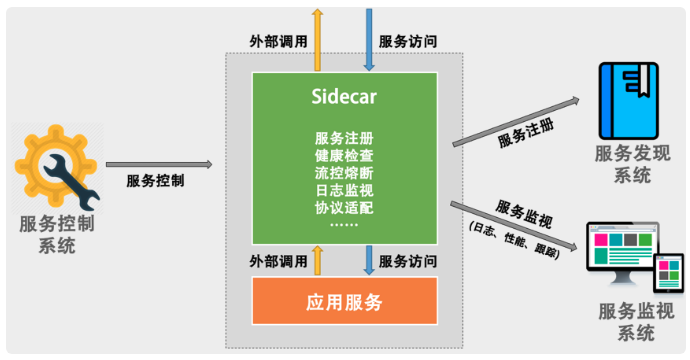
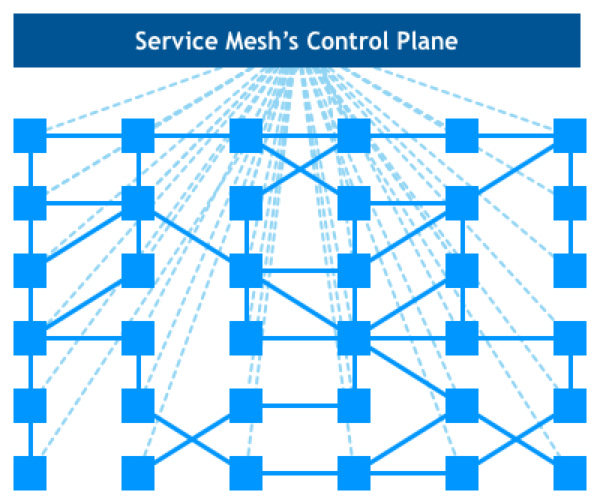

本篇文章来整理《左耳听风》栏目的分布式设计模式弹力设计、管理设计、性能设计篇，并根据当下情况，借鉴一二
弹力设计
隔离设计 Bulkheads
背景
这个设计借鉴了船舱通过隔板来把船隔成几个独立空间，防止一点进水蔓延到整个船只。2种隔离方法
按服务的种类来做隔离
如用户注册、商品中心、社交服务，将他们独立成各自的服务，并独占各自自己的DB
总会面对获取多个板块数据的情况，这样会调用多个服务，对于这样的问题，一般来说，我们需要小心地设计用户交互，最好不要让用户在一个页面上获得所有的数据。对。
业务跨板块时，控制就有点复杂。对此我们需要一个类似于 Pub/Sub 的高可用的并可以持久化的消息订阅通知的中间件来打通各个版块的数据和信息交换。最后还会有在多个版块中分布式事务的问题。对此，我们需要“二阶段提交”这样的方案。在亚马逊中，使用的是 Plan – Reserve – Commit/Cancel 模式。多租户：按用户的请求来分离
将用户分成不同的组，并把后端的同一个服务根据这些不同的组分成不同的实例。让同一个服务对于不同的用户进行冗余和隔离，这样一来，当服务实例挂掉时，只会影响其中一部分用户，而不会导致所有的用户无法访问。
做法有：
完全独立的设计。每个租户有自己完全独立的服务和数据。
独立的数据分区，共享的服务。多租户的服务是共享的，但数据是分开隔离的。
共享的服务，共享的数据分区。每个租户的数据和服务都是共享的。
一般会选择折中方案，服务是共享的，数据通过分区来隔离。
重点
隔离模式需要配置一些高可用、重试、异步、消息中间件，流控、熔断等设计模式的方式配套使用。课外
在虚拟化技术非常成熟的今天，我们完全可以使用“完全独立”（完全隔离）的方案，通过底层的虚拟化技术（Hypervisor 的技术，如 KVM，或是 Linux Container 的技术，如 Docker）来实现物理资源的共享和成本的节约。
异步通讯设计 Asynchronous
异步通讯的3种方式
请求响应式
直接REST调用通过订阅的方式
订阅者模式，接收方（receiver）会来订阅发送方（sender）的消息，发送方会把相关的消息或数据放到接收方所订阅的队列中，而接收方会从队列中获取数据。
这种情况下接收方需要想发送方订阅事件通过中间人的方式
这是完整版的订阅者模式，发送方（sender）和接收方（receiver）都互相看不到对方，它们看得到的是一个 Broker，发送方向 Broker 发送消息，接收方向 Broker 订阅消息。如下图所示。
事件驱动
每个服务都是“自包含”的。所谓“自包含”也就是没有和别人产生依赖。而要把整个流程给串联起来，我们需要一系列的“消息通道（Channel）”。各个服务做完自己的事后，发出相应的事件，而又有一些服务在订阅着某些事件来联动。
这好处与遇到问题，与隔离设计其实是相同的。需要消息跟踪：异步通讯会导致业务处理流程不那么直观，因为像接力一样，所以在 Broker 上需要有相关的服务消息跟踪机制，否则出现问题后不容易调试。
需要工作流引擎：因为服务间只通过消息交互，所以业务状态最好由一个总控方来管理，这个总控方维护一个业务流程的状态变迁逻辑，以便系统发生故障后知道业务处理到了哪一步，从而可以在故障清除后继续处理。
幂等设计 Idempotency
定义
所谓幂等性设计，就是说，一次和多次请求某一个资源应该具有同样的副作用。用数学的语言来表达就是：f(x) = f(f(x))。
为什么我们需要这样的操作？说白了，就是在我们把系统解耦隔离后，服务间的调用可能会有三个状态，一个是成功（Success），一个是失败（Failed），一个是超时（Timeout）。前两者都是明确的状态，而超时则是完全不知道是什么状态。因为系统超时，而调用户方重试一下，会给我们的系统带来不一致的副作用。全局ID
要做到幂等性的交易接口，需要有一个唯一的标识，来标志交易是同一笔交易。而这个交易 ID 由谁来分配是一件比较头疼的事。因为这个标识要能做到全局唯一。
算法详见： Twitter 的开源项目 Snowflake处理流程
对于幂等性的处理流程来说，说白了就是要过滤一下已经收到的交易。要做到这个事，我们需要一个存储来记录收到的交易。于是，当收到交易请求的时候，我们就会到这个存储中去查询。如果查找到了，那么就不再做查询了，并把上次做的结果返回。如果没有查到，那么我们就记录下来。
所以，最好是当这个存储出现冲突的时候会报错。也就是说，我们收到交易请求后，直接去存储里记录这个 ID（相对于数据的 Insert 操作），如果出现 ID 冲突了的异常，那么我们就知道这个之前已经有人发过来了，所以就不用再做了。比如，数据库中你可以使用。
对于更新的场景来说，如果只是状态更新，可以使用如下的方式。如果出错，要么是非法操作，要么是已被更新，要么是状态不对，总之多次调用是不会有副作用的。HTTP幂等性
Post不具备幂等性，处理如下：
首先，在表单中需要隐藏一个 token，这个 token 可以是前端生成的一个唯一的 ID。用于防止用户多次点击了表单提交按钮，而导致后端收到了多次请求，却不能分辨是否是重复的提交。这个 token 是表单的唯一标识。（这种情况其实是通过前端生成 ID 把 POST 变成了 PUT。）
然后，当用户点击提交后，后端会把用户提示的数据和这个 token 保存在数据库中。如果有重复提交，那么数据库中的 token 会做排它限制，从而做到幂等性。
当然，更为稳妥的做法是，后端成功后向前端返回 302 跳转，把用户的前端页跳转到 GET 请求，把刚刚 POST 的数据给展示出来。如果是 Web 上的最好还把之前的表单设置成过期，这样用户不能通过浏览器后退按钮来重新提交。这个模式又叫做。[对于前端渲染的方式，需要前端来控制]
重试设计 Retry
场景
“重试”的语义是我们认为这个故障是暂时的，而不是永久的，所以，我们会去重试
我认为，设计重试时，我们需要定义出什么情况下需要重试，例如，调用超时、被调用端返回了某种可以重试的错误（如繁忙中、流控中、维护中、资源不足等）。
而对于一些别的错误，则最好不要重试，比如：业务级的错误（如没有权限、或是非法数据等错误），技术上的错误（如：HTTP 的 503 等，这种原因可能是触发了代码的 bug，重试下去没有意义）。策略
关于重试的设计，一般来说，都需要有个重试的最大值，经过一段时间不断的重试后，就没有必要再重试了，应该报故障了。在重试过程中，每一次重试失败时都应该休息一会儿再重试，这样可以避免因为重试过快而导致网络上的负担加重。
在重试的设计中，我们一般都会引入，Exponential Backoff 的策略，也就是所谓的 “ 指数级退避 “。在这种情况下，每一次重试所需要的休息时间都会成倍增加。这种机制主要是用来让被调用方能够有更多的时间来从容处理我们的请求。这其实和 TCP 的拥塞控制有点像。例如，我们定义一个调用返回的枚举类型，其中包括了 5 种返回错误——成功 SUCCESS、维护中 NOT_READY、流控中 TOO_BUSY、没有资源 NO_RESOURCE、系统错误 SERVER_ERROR。
1
2
3
4
5
6
7public enum Results {
SUCCESS,
NOT_READY,
TOO_BUSY,
NO_RESOURCE,
SERVER_ERROR
}spring的重试方法
1
2
3
4
5
6
7
8
9
public interface MyService {
(
value = { SQLException.class },
maxAttempts = 2,
backoff = (delay = 5000))
void retryService(String sql) throws SQLException;
...
}设计重点
重试的代码比较简单也比较通用，完全可以不用侵入到业务代码中。这里有两个模式。一个是代码级的，像 Java 那样可以使用 Annotation 的方式（在 Spring 中你可以用到这样的注解），如果没有注解也可以包装在底层库或是 SDK 库中不需要让上层业务感知到。另外一种是走 Service Mesh 的方式（关于 Service Mesh 的方式，我会在后面的文章中介绍）。
对于有事务相关的操作。我们可能会希望能重试成功，而不至于走业务补偿那样的复杂的回退流程。对此，我们可能需要一个比较长的时间来做重试，但是我们需要保存请求的上下文，这可能对程序的运行有比较大的开销，因此，有一些设计会先把这样的上下文暂存在本机或是数据库中，然后腾出资源来做别的事，过一会再回来把之前的请求从存储中捞出来重试。
补偿设计 Compensating Transaction
- 前沿
既然要分布式，必须要分离，隔离的服务之间通信要用异步的来解耦开，然后可能会存在通信异常，就需要重试，重试时不想被重试操作多次，也就需要幂等，更重要的一个问题是如果业务走不下去怎么办？那就是本节的补偿，如果前边几种是正流程，那么补偿就是逆流程。 ACID 和 BASE
这里先做一点解释，这两个概念其实是tradeoff，严格必然不会繁荣，繁荣必然存在瑕疵。
有必要先说一下 ACID 和 BASE 的差别。传统关系型数据库系统的事务都有 ACID 属性，即原子性（Atomicity）、一致性（Consistency）、隔离性（Isolation，又称独立性）、持久性（Durability）。
为了提高性能，出现了 ACID 的一个变种 BASE。可以看到，BASE 系统是允许或是容忍系统出现暂时性问题的，这样一来，我们的系统就能更有弹力。因为我们知道，在分布式系统的世界里，故障是不可避免的，我们能做的就是把故障处理当成功能写入代码中，这就是 Design for Failure。业务补偿
一般来说，业务的事务补偿都是需要一个工作流引擎的。亚马逊是一个超级喜欢工作流引擎的公司，这个工作流引擎把各式各样的服务给串联在一起，并在工作流上做相应的业务补偿，整个过程设计成为最终一致性的。
对于业务补偿来说，首先需要将服务做成幂等性的，如果一个事务失败了或是超时了，我们需要不断地重试，努力地达到最终我们想要的状态。然后，如果我们不能达到这个我们想要的状态，我们需要把整个状态恢复到之前的状态。另外，如果有变化的请求，我们需要启动整个事务的业务更新机制。一个好的业务补偿机制需要做到下面这几点：
要能清楚地描述出要达到什么样的状态（比如：请假、机票、酒店这三个都必须成功，租车是可选的），以及如果其中的条件不满足，那么，我们要回退到哪一个状态。这就是所谓的整个业务的起始状态定义。
当整条业务跑起来的时候，我们可以串行或并行地做这些事。对于旅游订票是可以并行的，但是对于网购流程（下单、支付、送货）是不能并行的。总之，我们的系统需要努力地通过一系列的操作达到一个我们想要的状态。如果达不到，就需要通过补偿机制回滚到之前的状态。这就是所谓的状态拟合。
对于已经完成的事务进行整体修改，可以考虑成一个修改事务。我们需要小心维护和监控整个过程的状态，所以，千万不要把这些状态放到不同的组件中，最好是一个业务流程的控制方来做这个事，也就是一个工作流引擎。所以，这个工作流引擎是需要高可用和稳定的。这就好像旅行代理机构一样，我们把需求告诉它，它会帮我们搞定所有的事。如果有问题，也会帮我们回滚和补偿的。
下层的业务方最好提供短期的资源预留机制。就像电商中的把货品的库存预先占住等待用户在 15 分钟内支付。如果没有收到用户的支付，则释放库存。然后回滚到之前的下单操作，等待用户重新下单。
熔断设计 Circuit Breaker
先简单描述
定义
熔断器模式可以防止应用程序不断地尝试执行可能会失败的操作，使得应用程序继续执行而不用等待修正错误，或者浪费 CPU 时间去等待长时间的超时产生。熔断器模式也可以使应用程序能够诊断错误是否已经修正。如果已经修正，应用程序会再次尝试调用操作。由此可见，重试的次数显示实在前端的一种控制，这里的熔断实在后端，更确切说是网关的控制
示意图
状态
closed，通畅状态
我们需要一个调用失败的计数器，如果调用失败，则使失败次数加 1。如果最近失败次数超过了在给定时间内允许失败的阈值，则切换到断开 (Open) 状态。此时开启了一个超时时钟，当该时钟超过了该时间，则切换到半断开（Half-Open）状态。该超时时间的设定是给了系统一次机会来修正导致调用失败的错误，以回到正常工作的状态。在 Closed 状态下，错误计数器是基于时间的。在特定的时间间隔内会自动重置。这能够防止由于某次的偶然错误导致熔断器进入断开状态。也可以基于连续失败的次数。open，断开状态
在该状态下，对应用程序的请求会立即返回错误响应，而不调用后端的服务。这样也许比较粗暴，有些时候，我们可以 cache 住上次成功请求，直接返回缓存（当然，这个缓存放在本地内存就好了），如果没有缓存再返回错误（缓存的机制最好用在全站一样的数据，而不是用在不同的用户间不同的数据，因为后者需要缓存的数据有可能会很多）。Half-open，半开状态
允许应用程序一定数量的请求去调用服务。如果这些请求对服务的调用成功，那么可以认为之前导致调用失败的错误已经修正，此时熔断器切换到闭合状态，同时将错误计数器重置。
课外
Netflix 的Hystrix开源项目
限流设计 Throttle
定义
保护系统不会在过载的情况下出现问题，需要通过对并发访问进行限速，相关的策略一般是，一旦达到限制的速率，那么就会触发相应的限流行为。包括：拒绝服务、服务降级、特权请求、延时请求等3种实现方式
计数器方式
最简单的限流算法就是维护一个计数器 Counter，当一个请求来时，就做加一操作，当一个请求处理完后就做减一操作。如果这个 Counter 大于某个数了（我们设定的限流阈值），那么就开始拒绝请求以保护系统的负载了。可以增加对特权用户增加新的队列，来完成对不同用户的控制。漏斗方式
我们可以看到，就像一个漏斗一样，进来的水量就好像访问流量一样，而出去的水量就像是我们的系统处理请求一样。当访问流量过大时这个漏斗中就会积水，如果水太多了就会溢出。
一般来说，这个“漏斗”是用一个队列来实现的，当请求过多时，队列就会开始积压请求，如果队列满了，就会开拒绝请求。很多系统都有这样的设计，比如 TCP。当请求的数量过多时，就会有一个 sync backlog 的队列来缓冲请求，或是 TCP 的滑动窗口也是用于流控的队列。
令牌桶方式
关于令牌桶算法，主要是有一个中间人。在一个桶内按照一定的速率放入一些 token，然后，处理程序要处理请求时，需要拿到 token，才能处理；如果拿不到，则不处理。基于响应时间的动态限流
这其实是将限流加了负反馈回路
上面的算法有个不好的地方，就是需要设置一个确定的限流值。这就要求我们每次发布服务时都做相应的性能测试，找到系统最大的性能值。
我们想使用一种动态限流的方式。这种方式，不再设定一个特定的流控值，而是能够动态地感知系统的压力来自动化地限流。这方面设计的典范是 TCP 协议的拥塞控制的算法。TCP 使用 RTT - Round Trip Time 来探测网络的延时和性能，从而设定相应的“滑动窗口”的大小，以让发送的速率和网络的性能相匹配。这个算法是非常精妙的，我们完全可以借鉴在我们的流控技术中。
课外
tcp的限流方式
降级设计 Degradation
定义
所谓的降级设计（Degradation），本质是为了解决资源不足和访问量过大的问题。当资源和访问量出现矛盾的时候，在有限的资源下，为了能够扛住大量的请求，我们就需要对系统进行降级操作。也就是说，暂时牺牲掉一些东西，以保障整个系统的平稳运行。方法
停止次要功能
停止次要的功能也是一种非常有用的策略。把一些不重要的功能给暂时停止掉，让系统释放出更多的资源来。比如，电商中的搜索功能，用户的评论功能，等等。等待访问的峰值过去后，我们再把这些功能给恢复回来。简化功能
关于功能的简化上，上面的下单流程中已经提到过相应的例子了。而且，从缓存中返回数据也是其中一个。这里再提一个，就是一般来说，一个 API 会有两个版本，一个版本返回全量数据，另一个版本只返回部分或最小的可用的数据。
总结
分布式核心就是分，就是隔离服务
联系起来整理，才发现这一系列的脉络，整个分布式系统有两条流程，一条是正向流程、一条是反向流程。
正向流程中包括，分解服务、异步通讯、重试、幂等
反向流程指的是补偿设计
为了保护正反向流程不被流量压跨，又有了3个保护设计：熔断、限流、降级
管理设计
分布式锁 Distributed Lock
先简化写了
定义
我们知道，在多线程情况下访问一些共享资源需要加锁，不然就会出现数据被写乱的问题。在分布式系统下，这样的问题也是一样的。只不过，我们需要一个分布式的锁服务。对于分布式的锁服务，一般可以用数据库 DB、Redis 和 ZooKeeper 等实现。不管怎么样，分布式的锁服务需要有以下几个特点。redis分布式锁
SET resource_name my_random_value NX PX 30000redis分布式锁的问题
解决方案
- 版本号
- fence token
课外
细心的你一定发现了，这不就是计算机汇编指令中的原子操作 CAS（Compare And Swap）嘛，大量无锁的数据结构都需要用到这个。（关于 CAS 的话题，你可以看一下我在 CoolShell 上写的
配置中心 Configuration Management
先简写了，这个跟杨波老师的配置中心一个概念，不过引出了下边3节的内容
配置区分
有一种方式是把软件的配置分成静态配置和动态配置。
静态配置：所谓静态配置其实就是在软件启动时的一些配置，运行时基本不会进行修改，也可以理解为是环境或软件初始化时需要用到的配置。如，操作系统的网络配置，软件运行时 Docker 进程的配置，这些配置在软件环境初始化时就确定了，未来基本不会修改了
动态配置：就是软件运行时的一些配置，在运行时会被修改。比如，日志级别、降级开关、活动开关。架构
边车模式 SideCar
定义
边车就有点像一个服务的 Agent，这个服务所有对外的进出通讯都通过这个 Agent 来完成。这样，我们就可以在这个 Agent 上做很多文章了。但是，我们需要保证的是，这个 Agent 要和应用程序一起创建，一起停用。编程的本质就是将控制和逻辑分离和解耦，而边车模式也是异曲同工，同样是让我们在分布式架构中做到逻辑和控制分离。
讨论
对于监视、日志、限流、熔断、服务注册、协议转换等等这些功能，其实都是大同小异，甚至是完全可以做成标准化的组件和模块的。一般来说，我们有两种方式：
一种是通过 SDK、Lib 或 Framework 软件包方式，在开发时与真实的应用服务集成起来。性能高，但对应用有侵入
另一种是通过像 Sidecar 这样的方式，在运维时与真实的应用服务集成起来。性能低，无需改应用，增加了依赖，也做到了逻辑与控制的分离。其实一种是在代码层面解决，一种是在服务层面解决
结构
特点
我们知道，熔断、路由、服务发现、计量、流控、监视、重试、幂等、鉴权等控制面上的功能，以及其相关的配置更新，本质来上来说，和服务的关系并不大。但是传统的工程做法是在开发层面完成这些功能，这就会导致各种维护上的问题，而且还会受到特定语言和编程框架的约束和限制。
而随着系统架构的复杂化和扩张，我们需要更统一地管理和控制这些控制面上的功能，所以传统的在开发层面上完成控制面的管理会变得非常难以管理和维护。这使得我们需要通过 Sidecar 模式来架构我们的系统。
服务网格 Service Mesh
背景
将边车模式发扬广大，是 CNCF（Cloud Native Computing Foundation，云原生计算基金会）目前主力推动的新一代的微服务架构——Service Mesh 服务网格。
Service Mesh 这个服务网络专注于处理服务和服务间的通讯。其主要负责构造一个稳定可靠的服务通讯的基础设施，并让整个架构更为的先进和 Cloud Native。在工程中，Service Mesh 基本来说是一组轻量级的服务代理和应用逻辑的服务在一起，并且对于应用服务是透明的。示意图

课外
Rust/Go 语言实现的 lstio 和 Conduit，后者比前者要轻很多。
网关模式 Gateway
背景
这其实与service mesh是两个方向的发展了
它不需要为每个服务的实例都配置上一个 Sidecar。其实，一个服务集群配上一个 Gateway 就可以了，或是一组类似的服务配置上一个 Gateway。示意图
网关的功能
- 请求路由
- 服务注册
- 负载均衡
- 弹力设计：重试、幂等、流控、熔断、监视等都可以实现进去
- 安全方面：SSL 加密及证书管理、Session 验证、授权、数据校验等
对比
首先，Sidecar 的方式主要是用来改造已有服务。我们知道，要在一个架构中实施一些架构变更时，需要业务方一起过来进行一些改造。然而业务方的事情比较多，像架构上的变更会低优先级处理，这就导致架构变更的“政治复杂度”太高。而通过 Sidecar 的方式，我们可以适配应用服务，成为应用服务进出请求的代理。这样，我们就可以干很多对于业务方完全透明的事情了。
当 Sidecar 在架构中越来越多时，需要我们对 Sidecar 进行统一的管理。于是，我们为 Sidecar 增加了一个全局的中心控制器，就出现了我们的 Service Mesh。在中心控制器出现以后，我们发现，可以把非业务功能的东西全部实现在 Sidecar 和 Controller 中，于是就成了一个网格。业务方只需要把服务往这个网格中一放就好了，与其它服务的通讯、服务的弹力等都不用管了，像一个服务的 PaaS 平台。
然而，Service Mesh 的架构和部署太过于复杂，会让我们运维层面上的复杂度变大。为了简化这个架构的复杂度，我认为 Sidecar 的粒度应该是可粗可细的，这样更为方便。但我认为，Gateway 更为适合，而且 Gateway 只负责进入的请求，不像 Sidecar 还需要负责对外的请求。因为 Gateway 可以把一组服务给聚合起来，所以服务对外的请求可以交给对方服务的 Gateway。于是，我们只需要用一个负责进入请求的 Gateway 来简化需要同时负责进出请求的 Sidecar 的复杂度。